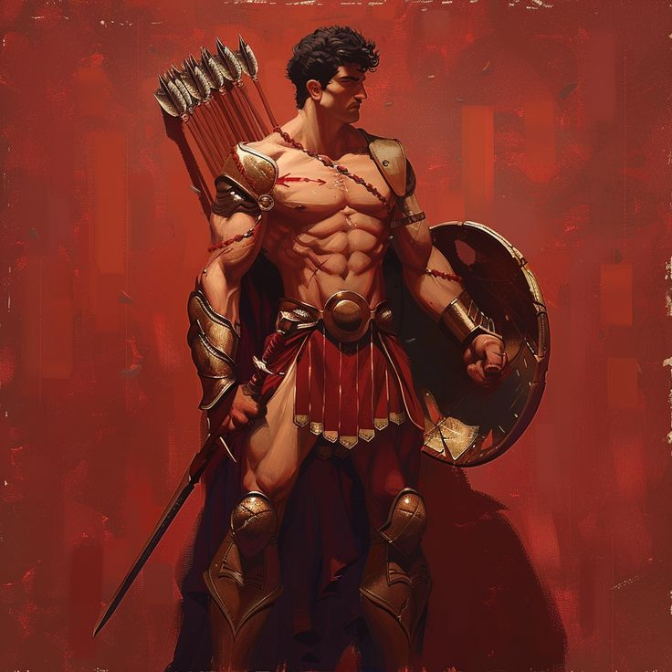

Alguns dos personagens mais famosos da Mitologia Grega eram os heróis, também conhecidos como semi-deuses.
Muitos desses heróis lendários eram conhecidos por terem matado criaturas horrendas, terem lutado em guerra,
se tornado reis entre outros grandes feitos. Alguns desses personagens são conhecidos até hoje, são representados em
filmes séries e livros e estão muito difundidos na cultura pop.
Mais Famosos
HERCULES
Herácles dos 12 trabalhos (o nome grego de Hércules, que era seu nome em no Império Romano) é tradicionalmente conhecido como um herói ou semideus, mas seu mito, como veremos, narra a sua ascensão ao Olimpo, o que sugere sua transformação em um deus. Hércules era filho de Zeus e de Alcmena. O herói ainda teve um pai adotivo, chamado Anfitrião, marido de sua mãe.
Como relatou Homero na Odisseia, Aquiles era o mais valoroso de todos os guerreiros gregos e distinguiu-se pela sua coragem na Guerra de Troia. Filho de Tétis, deusa do mar, e de Peleu, rei dos Mirmídones, na Tessália, Aquiles foi criado pelo centauro Quíron.

AQUILES
PERSEU
Perseu, filho de Zeus e Danai, é um dos heróis mais emblemáticos da mitologia grega, considerado um semideus. Seu pai, Zeus, é o Deus dos Deuses e, portanto, o principal da mitologia grega. Sem olhar em seus olhos e com o reflexo do monstro em seu escudo, ele consegue cortar a cabeça da Medusa.
Foi um dos personagens mais atuantes no cerco de Troia, no qual se destacou principalmente por sua prudência e astúcia. Durante a Guerra de Troia, os gregos venceram muitas batalhas a conselho de Odisseu, sendo este mesmo um grande guerreiro, apesar de sua baixa estatura (algumas lendas diziam mesmo que era anão).
ODISSEU
AJAX
Mortal, filho do rei Télamon, Ajax foi um dos melhores guerreiros aliados de Menelau durante a Guerra de Tróia, perdendo em destreza somente para Aquiles. Lutou contra o príncipe Heitor por um dia inteiro. Quando Aquiles foi morto, disputou com Odisseu pela armadura de herói, perdendo em oratória